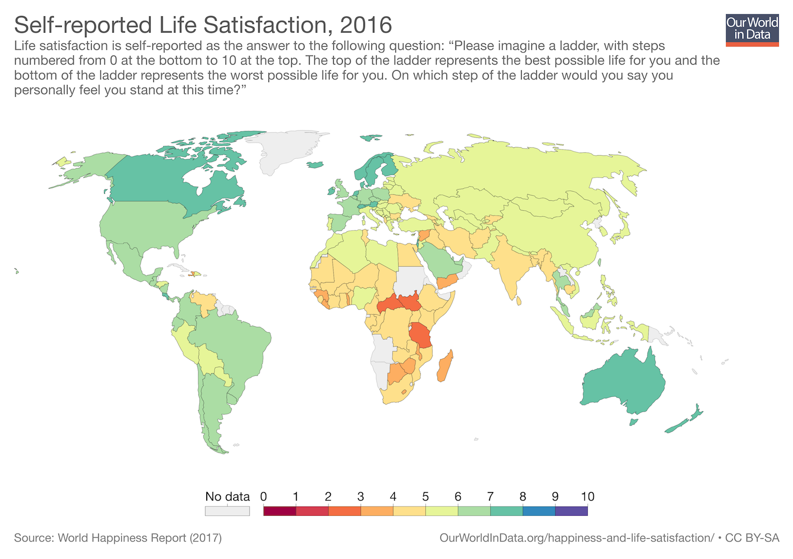

Good data visaulizations are important because they increase the island of knowlage becasuse good data visualizations will help viewer's understanding of material. Below is an example of a good data visualization
Bad data visualizations can inhibit knowlage by confusing the interpreter. Not following the basic rules of data visualization will cause confused viewers to be confused. Below is an example of a bad data visualization.

As you can see, a good data visualization can make all the difference when conveying information. But what specifically separates effective data visualizations from ineffective ones?
What Makes for a Good Data Visualizations
The Life Satisfaction visualization is was formed with data collected from a reliable well known institution The World Happiness report The 100 Most Active Tweeters visualization does not even have a citation. It is not hard to see that the Quality of life graph makes the relevant information more noticeable using a color scheme while the bad visualization appearance makes it difficult to understand what information to take away. The Life Satisfaction Visualizations is easy to explore because it has clear indicators of where you should examine due to well selected colors. The Most Active Tweeters visualization lacks organization. I think the Life Satisfaction visualizationis contain a honesty clarity and depth in an effective manner while the Most Active Tweeters visualization does not. Finally, the Active Tweeters model was in context, it was found in a list of the worst data visualizations of 2019. The Life Satisfaction visualization was in context, in the World Happiness Report.